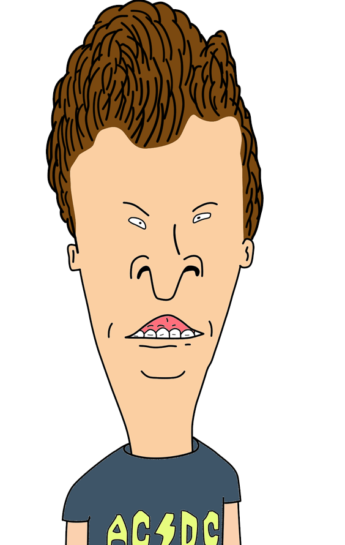
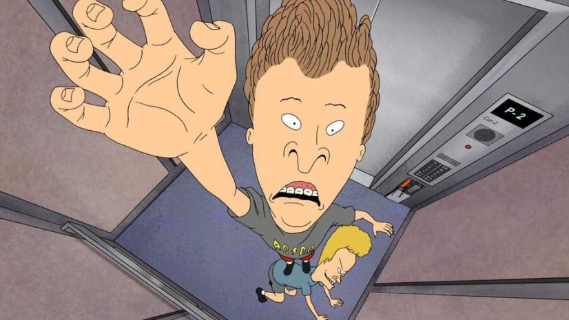
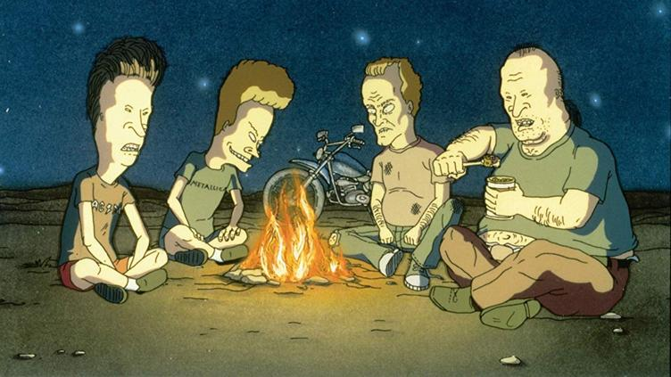
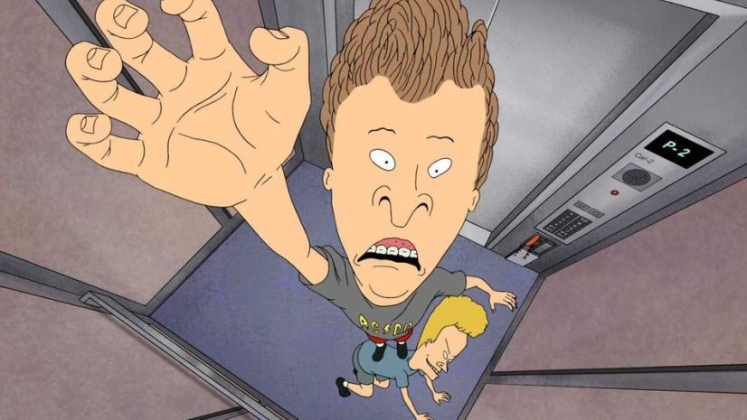
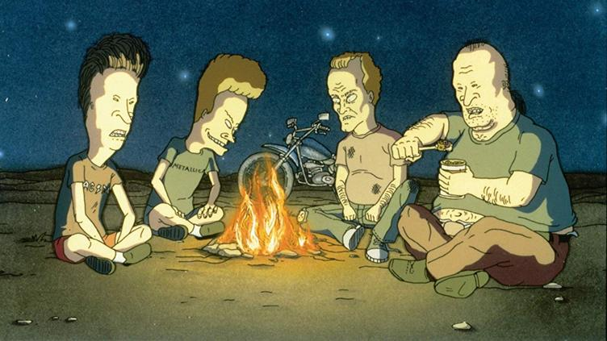

-Sinopsis-
Beavis y Butt-Head son dos personajes famosísimos en Estados Unidos. Son maleducados, vividores, les importa un comino el resto de la gente y les chifla la música heavy-metal. Son, en definitiva, cutres. Su serie de televisión es muy popular, y respaldados por este éxito, se lanzan a hacer su primer largometraje.
El robo de su televisor, provoca que estos dos disparatados personajes salgan a la calle y se pongan a recorrer su país. Con su particular forma de ver la vida, no tardan mucho en sembrar el pánico.

-Datos Generales-
- Duracion: 80 minutos.
- Generos: Animación, comedia, aventura.
- Idiomas: Inglés, español.
- Año: 1996.
- Producida en: Estados Unidos.
- Clasificación por edades: NR-12.
- Presupuesto: 12 millones de dólares.
-Director-
- Nombre: Mike Judge (Michael Craig Judge)
- Edad: 59 años.
- Nacionalidad: Estadounidense.
Otros proyectos del autor:
- King of thew Hill (1990)
- Office Space (1999)
- Idiocracy (2006)
- Jackass 3D (2010)
- Silicon Valley (2014)

-Personajes-
>Beavis
>Butt-head
>Tom Anderson
>Dallas Grimes
>Director McVicker

-Streaming-
Donde ver la película
Reviews
"It's funny in a strange way."
"You'd think that this show would be so stupid, and it is, but you get your laughs out of it. Sometimes, you need that immature side. And you have to just admit when something is funny. I would watch this show with my sister when we were younger, and I just wanted to be like her. It was the grundge era, *shudder*, so, I thought it was cool. And now I watch it on my own, and I still get my kicks. Beavis and Butt-head rocks."
"Mayn't be to everyone's tastes but it is a very funny and witty show"
"I have to say I love Beavis and Butt Head. I do agree it is not for everyone, the humour in the show is quite crude and vulgar. But it is also very, very funny. But it is funny not only in the writing which is outstanding, but in the character interplay which is very inspired and somewhat cynical as well. I also love the animation. It is very different and unique, but I like that. The backgrounds are fine, the characters look well drawn and the colours are nice. The music is also memorable, and the characters while cynical perhaps have a lot of likability. And of course the voice acting is top notch from all involved. In conclusion, a very funny show. It is not for everyone, as has been said already, but if given the chance, you might like it. 10/10 Bethany Cox"
-Media-

 




-Opinion-
-Extras-
Soundtrack
Beavis and Butt-Head in Virtual Stupidity
A parte de una película propia, Beavis y Butt-Head tienen un videojego propio llamado "Beavis and Butt-Head in Virtual Stupidity", publicado en 1995 por ICOM Simulations para PC